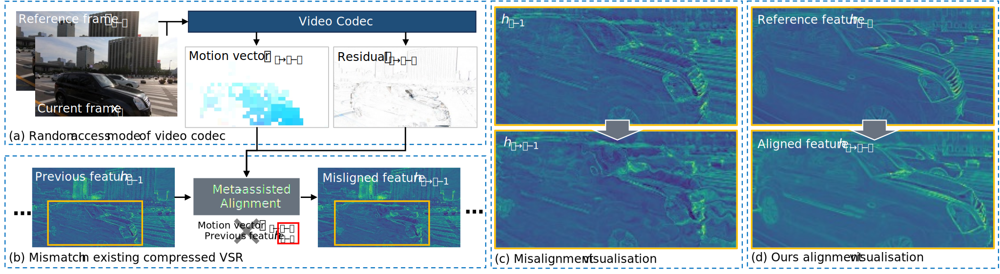

The demonstration video involves Our-Trans. method and 4x bicubic interpolation, and is compressed for fast loading.
You can select different constant rate factors for different scenes within two testsets.
Constant Rate Factor
Testset
Scene
Abstract
Videos transmitted over the Internet or stored on client devices are typically in compressed formats under the random access mode.
Existing compressed video super-resolution methods utilise metadata in a sequential manner consistent with presentation timestamps.
However, metadata is closely correlated with decoding timestamps, and there exists a large discrepancy between decoding and presentation timestamps.
Ignoring this discrepancy will hinder the effective use of metadata and lead to undesirable results.

Comparison of our method and the state-of-the-art compressed Video Super-Resolution (VSR) method (CAVSR).
(a) At time step i, metadata is generated by a current frame xi and a reference frame xi−α, where the value of α is decided by the codec process.
(b) Since α is not always equal to 1, using mismatched metadata in CAVSR to align the previous feature hi−1 will cause misalignment
(c) Some visualisations of misalignment in CAVSR. (d) Our alignment method accurately models the moving car and retains better contours thanks to the correct use of metadata.
In this paper, we propose an efficient compression-omniscient video super-resolution framework that correctly and fully leverages metadata extracted from the random-access compressed video. Firstly, we introduce a compression-omniscient propagation scheme based on the decoding timestamps. It leads to three major advantages: (1) With the revisit mechanism and the design based on decoding timestamps, our propagation can refer to information from different spatiotemporal locations; (2) This propagation matches the correct metadata prior for each reference information; (3) We employ parallel computation during inference leads to more than 50% speedup. Secondly, we propose a motion vector refinement module that refines motion vectors to the optical flow domain. This enables us to efficiently and accurately estimate the correspondence of information from different spatiotemporal locations. Experimental results demonstrate that our framework significantly improves efficiency while achieving state-of-the-art performance.
In this paper, we propose an efficient compression-omniscient video super-resolution framework that correctly and fully leverages metadata extracted from the random-access compressed video. Firstly, we introduce a compression-omniscient propagation scheme based on the decoding timestamps. It leads to three major advantages: (1) With the revisit mechanism and the design based on decoding timestamps, our propagation can refer to information from different spatiotemporal locations; (2) This propagation matches the correct metadata prior for each reference information; (3) We employ parallel computation during inference leads to more than 50% speedup. Secondly, we propose a motion vector refinement module that refines motion vectors to the optical flow domain. This enables us to efficiently and accurately estimate the correspondence of information from different spatiotemporal locations. Experimental results demonstrate that our framework significantly improves efficiency while achieving state-of-the-art performance.
Method
The overall architecture of the proposed framework. Given a frame sequence, let \(x_i\) be the current frame with presentation order \(i\), \(i-{\alpha}\) and \(i+{\beta}\) are two reference time steps of frame \(x_i\), \(f_i^j\) represent the feature computed at the \(i\)-th time step in the \(j\)-th feature state (shallow, intermediate). We slice two neighbouring I- or P-frames and all of the B-frames in them as a group. The first group starts with I-frame \(x_0\) and the following group will start with the P-frame. First, we compute shallow feature \(f_i^1\) through input frame \(x_i\) into the feature extraction module. Then, to obtain the feature \(f_i^j\), we first compute optical flow from reference frame \(x_{i-{\alpha}}\) and \(x_{i+{\beta}}\) to the current frame \(x_i\) using our proposed motion vector refinement module, which will be discussed in the next section:
$$o_{i\rightarrow i-{\alpha}}, o_{i\rightarrow i+{\beta}} = \textit{MVRM}(x_i, x_{i-{\alpha}}, x_{i+{\beta}}, m_{i\rightarrow i-{\alpha}}, m_{i\rightarrow i+{\beta}}),$$
where \(o_{i\rightarrow i-{\alpha}}\), \(m_{i\rightarrow i+{\alpha}}\) denote the feature-level optical flow and the motion vector from \(x_i\) to the \(x_{i-\alpha}\). The feature-level optical flows are used to warp the corresponding features to obtain the alignment features, and then they will be concatenated and passed into the feature aggregation block within propagation:
$$f_i^j = \mathcal{A}\Big(\textit{c}\big(f_i^{j-1}, \mathcal{W}(f_{i-{\alpha}}^j, o_{i\rightarrow i-{\alpha}}), \mathcal{W}(f_{i+{\beta}}^j, o_{i\rightarrow i+{\beta}})\big)\Big),$$
where \(\mathcal{A}\) represents feature aggregation block, \(\textit{c}\) denotes concatenation along channel dimension, \(\mathcal{W}\) represents warping operation. Finally, we can compute super-resolution frames \(y_i\) after propagation by using the final feature \(f_i^3\) through an upsampling module. In the following procedure, we will only elaborate on the reference time step \(i-{\alpha}\), and the same goes for \(i+{\beta}\).